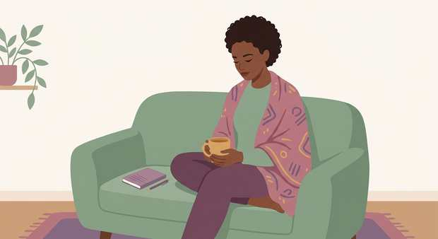
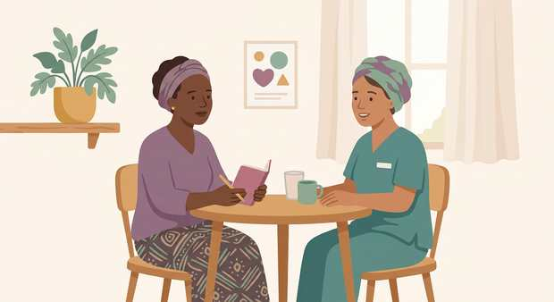
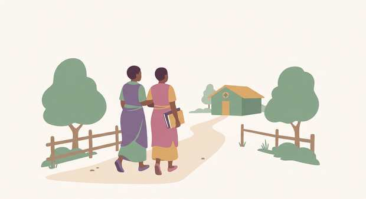
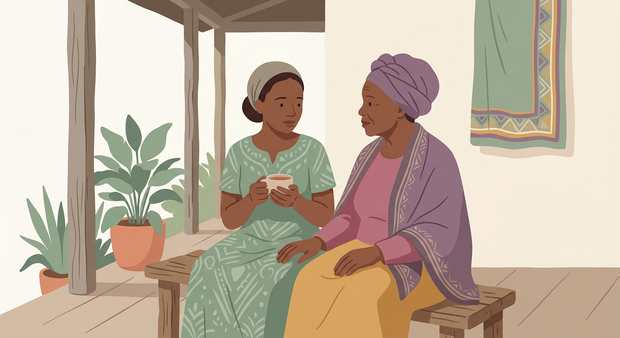

Severe period pain should not be ignored. If your period pain makes you miss school or work, keeps you from sleeping, affects your relationships, or makes everyday life difficult — you deserve to be heard. EndoPima helps you understand what you're experiencing, keep your health story together, and prepare your next step.
🌸 This is a calm, private space. Take your time — there is nothing scary here, and nothing is shared without your say-so.
You are not alone — this is not just you.

Pain that disrupts your life deserves attention.
You do not have to prove that your pain is "bad enough" before asking for help.
This isn't about diagnosing anything. It is about being heard — and finding the right next step.
Everyone's path is different — this is just a direction, not a rule.
If any of these sound familiar, you are not imagining things — and you are not alone.
If you read this and think, “This is what I’ve been experiencing” — that is exactly why this space exists.
These symptoms can have different causes. They do not automatically mean endometriosis. A healthcare professional can help assess what is happening — this list describes experiences, not a diagnosis.
Start by telling us what you've been experiencing. Then, step by step, we can look together at what might help.
About 3 minutes · private, stays on this device
We will not invent words for women and pretend they are real. Real, anonymised stories from Kenyan women — shared with consent — will appear here after community-based research.
The bigger picture, for context
Context is not the main story — you are. Sources: WHO (190M); EAMJ 2018, Kagia et al. (94% of 313 Kenyan adolescents); Ministry of Health CHP programme, 2024; multi-country diagnostic-delay studies (Kenyan data limited).
Each stage below is a real part of a woman's journey. The check is only the beginning: the idea is PIMA → CARE COMPLETED.
Symptom check on a smartphone, a USSD-style flow or with a Community Health Promoter. Produces a care-priority indicator — not a diagnosis.
Next-step guidance: where to go, what to ask, what to bring. Clinical assessment and appropriate imaging come first — not surgery for everyone.
Understand realistic costs, plan savings, navigate SHA where applicable, with a Dada Navigator by your side.
With consent, anonymised journeys grow the Endo Observatory — the evidence Kenyan policymakers do not yet have.
Plain-language, evidence-conscious answers.
FACT: Some menstrual pain is common, but severe or life-disrupting pain deserves medical attention.
FACT: Endometriosis can affect women regardless of income. In Kenya this myth has itself delayed diagnosis.
FACT: Pregnancy is not a cure for endometriosis. Symptoms may change but the disease persists.
FACT: Imaging has important limitations. A clinician determines what evaluation is appropriate.
FACT: This belief comes from a lack of research and access, not a lack of disease — and it has caused long diagnostic delays.
FACT: Pain that makes you miss school, work or sleep is a signal to be checked, not a strength to endure.
Endometriosis affects women globally. Kenyan evidence remains limited, care access is uneven, awareness is a challenge — and Kenya has large, under-used assets: a paid community-health workforce, growing digital-health infrastructure, mobile money that reaches almost every household, and existing organisations and clinicians already serving patients.
EndoPima is positioned as infrastructure that can connect and strengthen the existing ecosystem — not a replacement for the organisations already doing this work.
PROTOTYPE No partnerships are claimed. Listings below are "potential partners".
This is a concept. No organisation has formally partnered with EndoPima.
Self-contained demo of the product architecture — where we are.
Work with Kenyan clinicians and patient organisations to shape the screener.
Small, supervised pilot in 1–2 counties with ethics approval.
Prospective validation of the risk logic — not yet done.
If validation supports it.
A longitudinal Kenyan dataset and, later, an African endometriosis intelligence network.
Let’s make sense of what you’re experiencing. About 3 minutes, simple questions, no medical words to decode — a Community Health Promoter can do it with you.
🌸 You can pause at any time and come back later — your answers will be waiting for you here, on this device. You can do this alone, or with someone you trust.
You may have had to explain the same symptoms again and again. Pasipoti keeps your health story together — symptoms, impact, previous care, investigations — so you can take it with you when you seek care. It is your story, not a medical record, and it never replaces clinical notes.

DEMO Concept demonstrated with on-device storage. Record only what health workers actually told you — do not fabricate results. Patient-generated health summary — not a medical record.
Example: "Age 14 — severe period pain began". Add every milestone you remember.
These chips feed your doctor summary.
Record what was done and what the clinician told you — in your own words. No results are generated here.
A few things worth noticing before your appointment — you don't have to have perfect answers.
💛 Your story deserves to arrive with you. You shouldn't have to remember everything when you're sitting in front of a clinician — that is what this story is for.
Turn your passport + latest screening into a one-page, printable summary for a clinician. It clearly states it is patient-generated and not a diagnosis.
Real, verified facility information is not available yet — what you see below is demonstration content, so you can see how the idea would work. A real directory will be built with county health teams. What you can use today: the pathway, what to ask, and what to bring.

Two questions only. Guidance is illustrative — a clinician makes the real decision.
Recognise symptoms; decide a priority.
A clinician listens, examines, decides. This is the entry point for almost everyone.
Ultrasound (often the first imaging), or other investigations the clinician considers.
Gynaecology or other specialist review — only if the clinician determines it's needed.
Pain management, hormones, physiotherapy, or surgery for some — discussed with you.
Review, adjust, and keep the journey going.
DEMO Illustrative entries structured like a real directory would be. No live availability is shown.
Patient-led support exists in Kenya and is part of the ecosystem this platform imagines connecting to. Peer support is not medical care.
Example (potential partner): Endo Sisters East Africa Foundation — peer support, monthly meet-ups, school talks. Not a formal partnership — see "Potential partners".
Worried about the cost of care? We know healthcare costs affect when and where someone seeks help. Fanya helps you estimate and plan — it is not a payment service, nothing here is verified pricing, and no money ever moves through this app.
Tick the categories that apply to your planned care step. Ranges vary by facility and level of care; a tariff (e.g. the published SHA schedule) is not the same as the final amount a patient pays.
Demonstration/illustrative estimates, not quotes. Ask for written prices at the facility. SHA coverage depends on eligibility, pre-authorisation and the official current benefit schedule.
A planning tool, not a financial product. EndoPima does not hold or move any money — and no M-Pesa transaction is implemented in this prototype.
A future concept for how support could be pooled. No funds are currently held or transferred by this prototype.
How consented, anonymised data could eventually inform endometriosis care in Kenya: county symptom burden, diagnostic delay, referral bottlenecks, access and outcomes.
DEMO Demonstration data — not national prevalence estimates. This is a concept for researchers and policymakers, not part of the woman’s journey.
Patient-reported care timeline (illustrative). Not an officially validated diagnostic-delay index.
Conceptual metrics. A trustworthy empty state is better than fake statistics — most cells intentionally say "Data not yet available". Any demo cell is clearly marked.
| County | Screening coverage | Referral access | Avg travel distance | Care completion | Waiting time |
|---|
For students, teachers and parents. Learn, test yourself, play a scenario — never scary, never a diagnosis.
Three short videos are planned (60–90 seconds each, captioned). Until they are made, everything below is the text version — you never need a video to understand something important.
A chronic condition where tissue similar to the womb lining grows outside the womb — most often in the pelvis. It can cause severe period pain, pain with sex or bowel movements, heavy bleeding, fatigue and can affect fertility. It is not contagious and not anyone's fault.
Some period discomfort is common. But pain that makes you miss school, stops you sleeping, or that strong painkillers don't fix — that deserves attention. Severe or life-disrupting menstrual pain is a reason to talk to an adult and, if it continues, a clinician.
If pain gets worse over months, happens between periods, hurts during sex or bowel movements, or comes with very heavy bleeding — talk to a trusted adult, school health staff or a Community Health Promoter. Getting checked early matters.
Choose someone you trust: parent, aunt, teacher, school nurse. Say plainly: "My periods hurt so much that I miss school." You are not being dramatic. If the first person dismisses you, try another adult. Keep asking until you are heard.
A quiz or an app cannot tell you that you have endometriosis — only a clinician can. Endometriosis is one possible cause among others. Knowing about it is strength; self-diagnosis is not.
Not necessarily — but bad cramps that make you miss school, that painkillers don't fix, or that last beyond your period are worth checking with a clinician. A check is about getting answers, not about assuming a disease.
Not always. A clinician decides what evaluation is appropriate — often starting with a conversation and sometimes an ultrasound. Surgery is not the first step for everyone.
Family history is one thing a clinician may consider. It isn't a diagnosis; it's a reason to pay attention and discuss it with a health professional.
A trusted teacher, parent, school health staff or Community Health Promoter. Period pain is a health topic like any other. There is no shame in asking for help.
Three ways this platform could meet women where they are: low-bandwidth USSD-style access, Community Health Promoters, and peer navigation. (These are ecosystem ideas — you don’t need any of them to use EndoPima for yourself.)

This simulates how EndoPima could work on a feature phone over USSD or an SMS-style menu. No real USSD shortcode or gateway is connected. Tap the numbers or type them below — just like pressing keys.
Your personal dashboard: where you are in the journey, what to do next, and everything kept together on this device.
A quick check-in after a visit or treatment. Your answers stay on this device and power the "Are you stuck?" detection below.
A serious prototype understands its limitations. This is where we are honest about them.
Where advanced technology is honestly described as future work. None of this is available through EndoPima today.
Potential decision support for trained clinicians reading scans — never a replacement for clinical judgement.
Future blood / saliva / menstrual-fluid research. Requires lab infrastructure, validation and access pricing for LMICs.
Requires ethically collected data, clinical validation on representative Kenyan populations, external validation and bias assessment.
A future consent flow. In this prototype nothing leaves your device either way.
Saying no never affects any help you receive. Participation would be explained in full before any real collection, and you could withdraw at any time.
In this prototype, data is stored only in your browser. These controls show how consent would work in a real deployment.
What EndoPima would storeWithdrawal is always possible; research consent is never a condition for basic assistance.
Designed for future compliance with applicable Kenyan data-protection and health-information requirements. No certifications or compliance statuses are claimed, because none have been implemented.
—
SUPABASE_CONFIG at the top of the app script to switch cloud sync ON.Prototype demonstrating the architecture.
Clinical co-design with Kenyan clinicians & patient organisations.
Small supervised county deployment with ethics approval.
Prospective clinical validation of the risk logic.
Additional counties, if validation supports it.
Kenyan longitudinal dataset → African endometriosis intelligence network.
None of the future phases have happened yet. This roadmap is a plan, not a record.